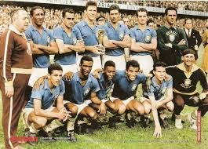

1958 — Suécia
Final: Brasil 5–2 Suécia
O Brasil conquistou sua primeira Copa do Mundo. O jovem Pelé, com 17 anos, despontou para o mundo, e a equipe mostrou um futebol ofensivo e coletivo sob o comando de Vicente Feola.